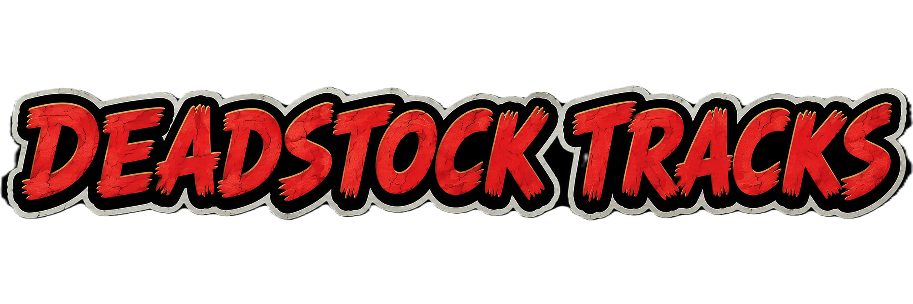

SONG 1 「undo」
LYRICS
高速回転してる指
目をただじっと見つめてる
やがて赤く染まった壁に
ゆっくりと浮き上がってくる
右腕哂う髑髏のタトゥー
それを舐める女の夜更けさ
俺は真夜中のアンクルジョニー
チークタイムにジンジャエール
MY SWEET BABY
綺麗な瞳をした女の子
ミルクを口に流し込み
ポケットのオレンジ噛り付く
少しだけ世界を好きになる
見上げた空はエンジ色
そこにぶら下がるお月様
俺はこの街が好きさ
俺はこの街が好きさ
MY SWEET BABY
高速回転してる指
目をただじっと見つめてる
優しさ悲しさすべてを
忘れてしまっただけなんだ
ほんの少しだけでもいいから
分けてやってはくれないか
君のその真っ白な心を
世界を憎む人たちに
MY SWEET BABY
SONG 2 「hurry up」
LYRICS
HOLLYNITE
街に響き渡るジングルベル
今すぐここから逃げなくちゃヤられちまうぜ
鍵穴から覗き込むあいつはサンタクロース
真っ白な髭摩りながらその期を待ってる
Hurry up baby
Hurry up!hurry up!
Hurry up baby
猟銃が妙に似合ってる
音を立てちゃ駄目だぜbaby
息を潜めて窓からDive決め込んでGetaway
闇を駆け抜けろ
後ろ向いちゃダメだぜbaby
悪魔の宣告
暗闇の中口笛がほら聞こえてくるだろ
Hurry up baby
Hurry up!hurry up!
Hurry up baby
銃声が鳴り響く夜
Hurry up baby
Hurry up!hurry up!
Hurry up baby
真っ赤な目のあいつはサンタクロース
なんかじゃないぜ
筋金入りのDirtywhite
半端じゃないぜ
SONG 3 「nemesis」
LYRICS
突然雨が降ってきてカミナリ
恐れをなして逃げ惑う人たち
だんだん嫌な予感がしてたんだ
世界の終わりに投げキッス
偉大な力は異常に輝き
見るもの全てを虜にするらしいぜ
聞こえる悲鳴とくすんだ雨雲
零番サングラス越しに未来を占う
壊して直して繰り返す繰り返す
恋するダストパンクスの目に映った真実
偉大な力は異常に輝き
あるもの全てを焼き尽くすらしいぜ
シンディ
復讐の連鎖ってやつを始めようぜ
始めようか 始めようぜ
時代は流れて繰り返す繰り返す
聞こえる悲鳴は絶え間なく絶え間なく
そんなに世界を憎んじゃダメだぜ
恋するダストパンクスが抱きしめる真実
偉大な力は異常に輝き
見るもの全てを虜にするらしいぜ
偉大な力は異常に輝き
あるもの全てを焼き尽くすらしいぜ
シンディ
傷跡を見せてやろうか
見せてやろうか
シンディ
復讐の連鎖ってやつを始めようぜ
始めようか 始めようぜ
SONG 4 「humanity」
LYRICS
humanity
SONG 5 「timid world」
LYRICS
Baby ゴールドの髪なびかせながら
どこへ行くんだい？
Baby 僕らの中を吹き抜けた風は
どこへ行ったの？
華奢な体にロンドンスタイル
ピンクのスニーカー 張り付いたパンツ
ゴールドの髪なびかせていた
ロックスターのTシャツは
Just my masterpiece!
いっそのことこのまま消えちまえばいいさと
そんな風に思ってた
明日の空の色とか電車の行く先とか
どうでもいいと思ってた
銀色の街 ギンガムチェック
首に巻いたパンクスと猫
耳を澄まして波の音を
探すのはもうやめたらしい
グラスを揺らししばらくそれを
眺めた後に流し込んだね
君はいつだってそこにいたんだ
もうすぐさほら夜が明ける
So lovely youth!
太陽が昇りきるまでもう少しここにいさせて
朽ち果てても構わない
灰色の世界はまだ晴れることはないけど
それはそれでいいと思ってるよ
僕は変かな 君はどう思う
未来はあるのかな 君はどう思う
Baby ゴールドの髪なびかせながら
どこへ行こうか
Baby 僕らの中を吹き抜けた風は
どこへ行ったの？
Baby 灰色の世界でゴールドの髪の
君を見つけたんだ
Baby 銀色の街 ギンガムチェック
君はいつだってそこにいたね
太陽が昇りきるまでもう少しここにいさせて
朽ち果てても構わない
灰色の世界はまだ晴れることはないけど
それはそれでいいと思ってるよ
履き潰したピンクのお気に入りのスニーカーじゃ
もう二度とこの街を歩けないけど
鳴り止まないビートが枯れてしまったはずの
僕のハートに火をつけるんだよ
僕は変かな 君はどう思う
未来はあるのかな 君はどう思う
I'm in a timidworld